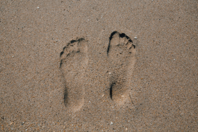

Petition
Southern Resident orcas are critically endangered with around 73 remaining. This petition is your chance to have your voice heard and urge the Oregon Fish and Wildlife Commission to take action. Sign now to help protect these orcas under Oregon’s Endangered Species Act before it's too late. Action Network, Tell the Oregon Fish and Wildlife Commission to protect orcas.
Carbon FootPrint
A carbon footprint is the total amount of greenhouse gases, such as C02, released into the atmosphere by either a person, company, or activity, which contributes to climate change. You can get involved without absolutely turning your life upside down, by simply being more considerate of energy and gas usage. Not to imply that you need to walk everywhere you go, but it can be as simple as turning off unused electronics. Another great thing to do is to recycle and use reusable bags and bottles. Not only does getting rid of plastic usage help you by not digesting microplastic, but it also helps the environment. A large carbon footprint results in more contribution to climate change, which can harm ecosystems by increasing global temperatures and disrupting wildlife habitats.